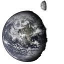
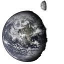
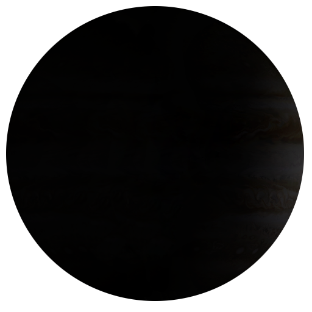
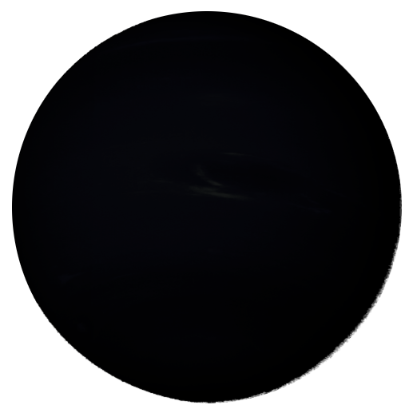
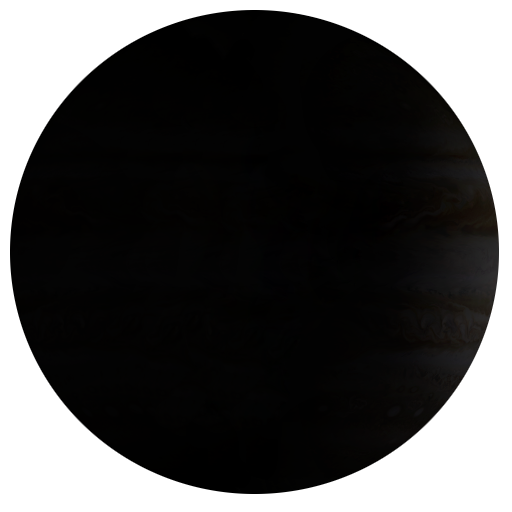
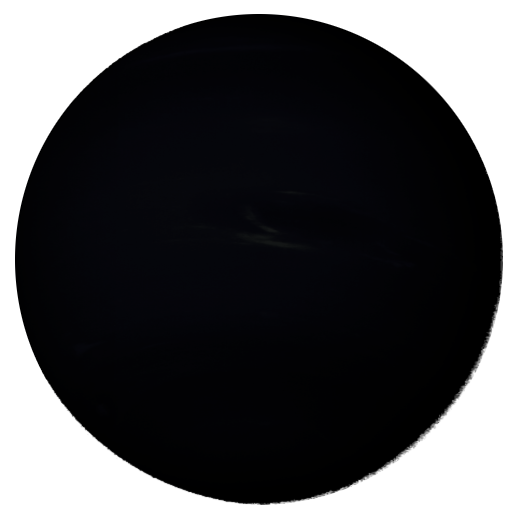

- age: 4.6 billion years
- diameter: 1 392 000 km
- gravity: 274 m/s²
- diameter: 4879 km
- gravity: 3.7 m/s²
- length of day: 4222 hours
- orbital period: 88 days
- mean temperature: 167° c
- diameter: 12 104 km
- gravity: 8.9 m/s²
- length of day: 2802 hours
- orbital period: 224 days
- mean temperature: 464° c
- diameter: 12 756 km
- gravity: 8.9 m/s²
- length of day: 24 hours
- orbital period: 365 days
- mean temperature: 15° c
- diameter: 6792 km
- gravity: 3.7 m/s²
- length of day: 24 hours
- orbital period: 687 days
- mean temperature: -65° c
- diameter: 142 984 km
- gravity: 23.1 m/s²
- length of day: 9.9 hours
- orbital period: 4331 days
- mean temperature: -110° c
- diameter: 120 536 km
- gravity: 9.0 m/s²
- length of day: 10.7 hours
- orbital period: 10 747 days
- mean temperature: -140° c
- diameter: 51 118 km
- gravity: 8.7 m/s²
- length of day: 17.2 hours
- orbital period: 30 589 days
- mean temperature: -195° c
- diameter: 49 528 km
- gravity: 11.0 m/s²
- length of day: 16.1 hours
- orbital period: 59 800 days
- mean temperature: -200° c

 

 


